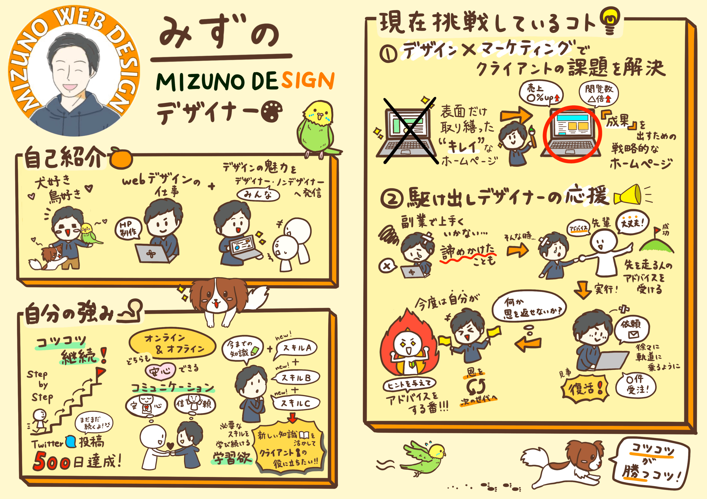
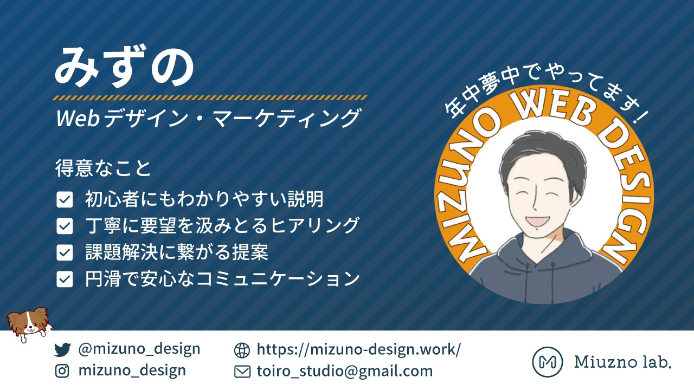
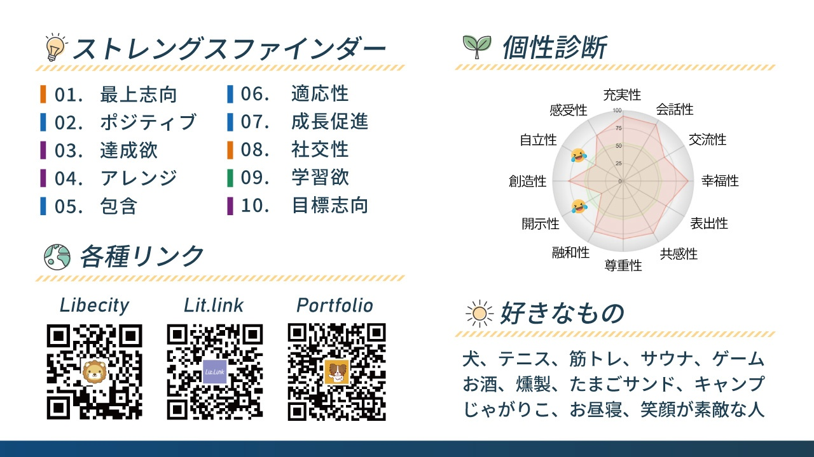

「年中夢中で、やってます。」
コツコツが勝つコツ ── スキルなしから単月200万円までを
寄り添いながら積み上げた Webデザイナー。
最初のページは「みずやん自身が、自分のことを描いた1枚」から。ホワイトボードに走り書きしたみたいな手描きの自己紹介に、人柄ぜんぶ載ってます。

ニックネームは みずやん、屋号は Miuzno lab.。 リベシティでは 「寄り添い型Webデザイナー」として、中小企業のWeb制作・医療系特化のサイト・マーケティング運用支援を本業にしている人です。
口癖は 「年中夢中でやってます」。 毎日デザインを作って発信していた時に、自分でつぶやいたら気に入って、座右の銘に昇格させた言葉。
副業を始めた頃にりこぴんさんに付けてもらったキャッチコピーは 「コツコツが、勝つコツ」。
スキルなしのサラリーマンから、単月200万円を積み上げるまで、ずっとコツコツ。
スタエフを毎朝、Twitterを500日連続、毎日デザイン制作と発信を100日連続×2回。派手な飛び道具じゃなく、続けて結果に出している人です。
家には妻と、パピヨンの シロハライソコ。
中学駅伝で全国大会、フィリピンで1ヶ月語学留学、ヒッチハイクで名古屋〜静岡、ダイビングでサメと泳ぐ。
仕事の合間に、テニス・筋トレ・サウナ・燻製・キャンプ・たまごサンド・じゃがりこ・お昼寝・笑顔が素敵な人 ── "好き"を支えに、年中夢中 のリズムで動いています。

この取扱説明書のベース。Gallup CliftonStrengths® 34 のうち、上位10資質と、参考までに個性診断（CQ）のレーダー、各種リンク・好きなものまで、みずやんがプロフィール画像に1枚でまとめてくれた版です。

それぞれの資質が、みずやんの中でどう動いてきたか。副業ゼロ→単月200万円までの歩みと並べて、ひとつずつ紐解きました。
TOP5の影に見えるけど、6〜10位がみずやんの「現場対応の柔らかさ」「相手を伸ばす目」「初対面でも温度が上がる軽さ」「学び続ける足腰」「目標までブレない芯」を支えています。
「今ここ」に乗っていく力。クライアントの業種・要件・予算が変わっても、その都度ちゃんと馴染んで動ける。
相手の 伸びそうな芽 を見つけて声をかける力。結果が出る前の段階で「いいですね、やってみてください」が言える人。
初対面の人と 仲良くなるまでの速度 が早い人。100人オフ会の幹事、ヒッチハイク、フィリピン留学 ── 知らない場所に出ていく時のハードルが低い。
新しいスキル・知識を 取りに行く 力。手描き自己紹介に 「スキルA、スキルB、スキルC」 と書いて、学習癖がそのまま絵になっている。
「達成したらそれで終わり」じゃなく、次の目標を即セットしてまた走り出せる人。「単月、さらに頑張ります！」が口癖。
このページとセットで 「みずやん 資質図解ブランチ」 を別ページに用意しました。
TOP10それぞれに「メタファー＋深掘り解説＋みずやん接続＋頼みたい時のコツ」を1枚ずつ詰めてあります。気になる資質をふっと開きたいときにどうぞ。
10資質の組み合わせから推測した、たぶん本人が「うん、わかる」って頷くやつ。
朝起きて、まず スタエフを録る。話のオチは 「自然にWeb集客」 に着地。
クライアントから「とりあえずキレイなページが欲しいんで」と言われると、0.3秒で違和感センサーが起動する。
カフェで作業中に 知らない人と話し始めて、気付いたら名刺渡してる。
うまくいかない副業は 「これは方向転換」 と言って、3日後にはケロッと次を始めている。
気付いたら 「いいですね、それやってみてください」 を1日5回くらい言ってる。
新しいデザインツールやAIが出ると 「ちょっと触ってみよう」 でその日のうちに試している。
サウナに入りながら 次の案件の構成を考えていて、ととのって出てきた瞬間にメモる。
パピヨンの シロハライソコ と話している時間が、人生で一番ゆるい。
たまごサンドが目に入ると つい買ってしまう。じゃがりこは家に常備。
勉強会の運営で 場が温まっていく瞬間 に、こっそりニヤッとしている。
資質の話は抽象に流れがちだから、みずやんが「もう実際にそれを使って結果を出している」ところを置いておきます。
満たされ方と消耗の仕方。10資質を踏まえた "扱い方ガイド"。
単独じゃなく、組み合わさって初めて見えてくる「みずやんの動き方」。
1位 最上志向 が「結果を出すレベルまで上げよう」と方向を決め、4位 アレンジ が「デザイン × マーケ × 運用」をまとめて差し出し、9位 学習欲 が「新しいツール・AIも持ってこよう」と素材を増やす。クライアントから見ると "Webサイト1本のはずが、横断的な事業のパートナーが来た" 体験になるのはこのコンボのせい。
2位 ポジティブ が「楽しい！」を燃料にして、3位 達成欲 が「今日も1段、明日も1段」と毎日チェックを積み、10位 目標志向 が「次は単月200万、その次は…」と先のラインを置く。500日連続Twitter／100日連続デザイン×2回／単月200万円達成 ── すべてこの3資質が同時起動した結果です。
5位 包含 が「誰も外したくない」と気を配り、7位 成長促進 が「いいですね、やってみてください」と背中を押し、8位 社交性 が「はじめまして！」を躊躇しない。Webデザイン部の勉強会・LT会・100人オフ会の幹事 ── ぜんぶこの三位一体の自然な発露です。
6位 適応性 が「今ここの現場」に合わせて型を変え、9位 学習欲 が「その業界の言葉と数字」を即吸収する。医療系の薬機法、生成AIの最新動向、補助金の制度 ── 知らないジャンルにスッと入って、クライアントに渡せる温度まで持っていける根拠です。
取説の側から見立てるだけじゃなく、本人が自分について書いた言葉を、3つだけそのまま並べます。
この取扱説明書を作っている2026年5月時点での、ざっくりした現在地。
スキルなしの会社員から副業を始めて、月10万 → 月200万 → 単月200万円 を積み上げてきた人。 いまは "1案件LP納品" の段階を超えて、中小企業のWeb集客全体・医療系の特化型サイト・生成AIを混ぜたSNS運用 へと、伴走できる領域を広げている真っ最中。
並走して、駆け出しデザイナーの応援 も大きな比重。Webデザイン部の勉強会・LT会・100人オフ会の幹事。 本人の言葉で言うなら 「みんなで稼ぐ力をアップさせて、楽しい人生を送りたい」。
この取扱説明書を読んだ上で、「実際にお仕事を頼みたい・組みたい」となった時の進め方をかいつまんで。
最上志向1位が起動する条件は 「結果が見える依頼」。
売上目標・問い合わせ件数・LTV・解像度の高い顧客像 ── 数字や顔が見える依頼のほうが、みずやんの本領が出ます。
デザインだけ・コピーだけ・運用だけ、と切り出すよりも、戦略 → 制作 → 公開 → 運用 → 改善 を任せた方が、アレンジ4位 × 最上志向 × 学習欲のコンボでクオリティが跳ねます。
みずやんのキャッチコピーは 「初心者にもわかりやすい説明」。
包含5位＋成長促進7位の人なので、「こんなこと聞いていいですか？」を 「いいですね、聞いてください！」 で受け止めてくれます。
達成欲3位＋目標志向10位の人なので、毎週／毎月の進捗チェックが好物。
放置案件より、ペースが見えている伴走案件の方が、結果が早く出ます。
ポジティブ2位＋社交性8位の人。真面目すぎないフラットな空気のほうが、アイデアが出るタイプ。
サウナや散歩、雑談から仕様が決まる打ち合わせも全然アリ。
学習欲9位＋適応性6位なので、「最近こんなツールが出てて」 の話題はそのまま会話の燃料になる。
クライアントの方が AI に詳しいケースでも、まったく問題なく合わせてくれます。
取扱説明書ってだいたいクライアント向けに書くものだけど、これは "プレゼント版"。
みずやんが自分のことをもう一度、おけもんの目線で見られるように。
手描きの自己紹介、プロフィール画像、リベシティの全文 ── ぜんぶ読ませてもらった上で、
10資質 × みずやんのエピソード × これからの伴走方向 を、1枚にまとめてみました。
「自分のこと、こう見えてるんだな」と、ちょっと俯瞰で覗くつもりで使ってもらえたら嬉しいです🌷